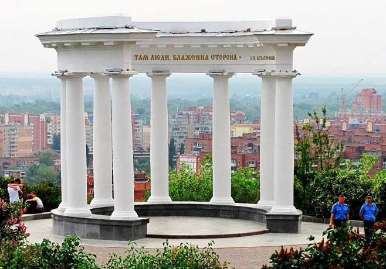

Дата народження: 16.03.2000. Місце народження: м.Київ
Школа: Спеціалізована школа І-ІІІ ступенів з поглибленим вивченням англійської мови № 15. Університет: Національний технічний університет України "Київський політехнічний інститут імені Ігоря Сікорського"
Мої хобі:
Улюблені фільми:
Полтава — важливий культурний центр, великий транспортний вузол. Площа міста — 112,52 км.кв., адміністративно місто розділене на 3 райони: Шевченківський (колишній Жовтневий), Київський і Подільський (колишній Ленінський). Наявне населення — 279 593 осіб (01.01.2022).
